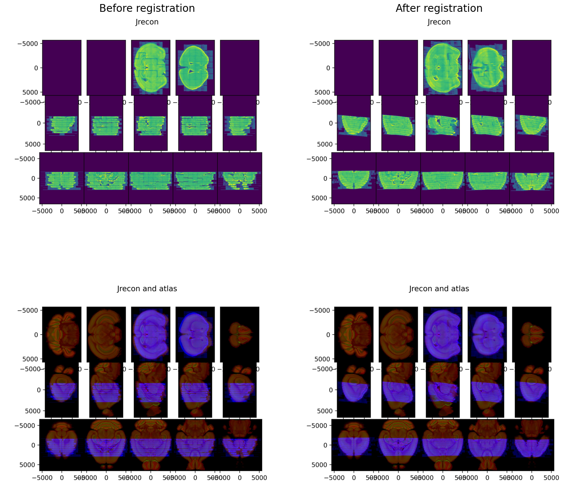
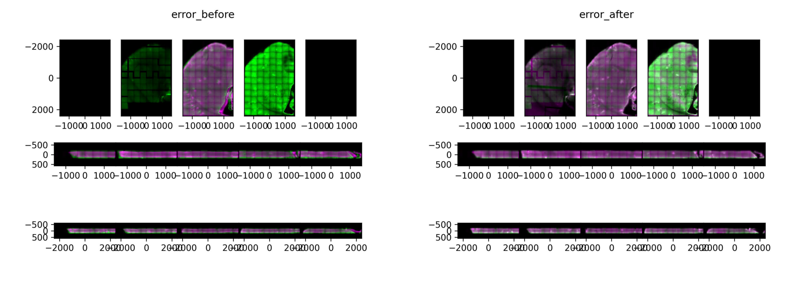
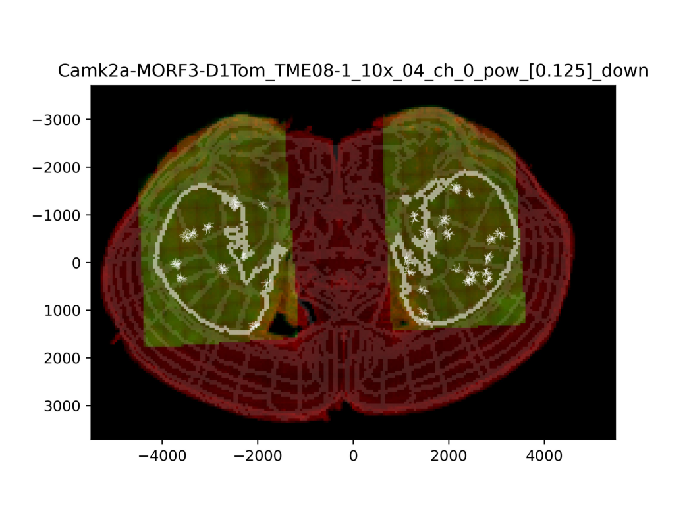
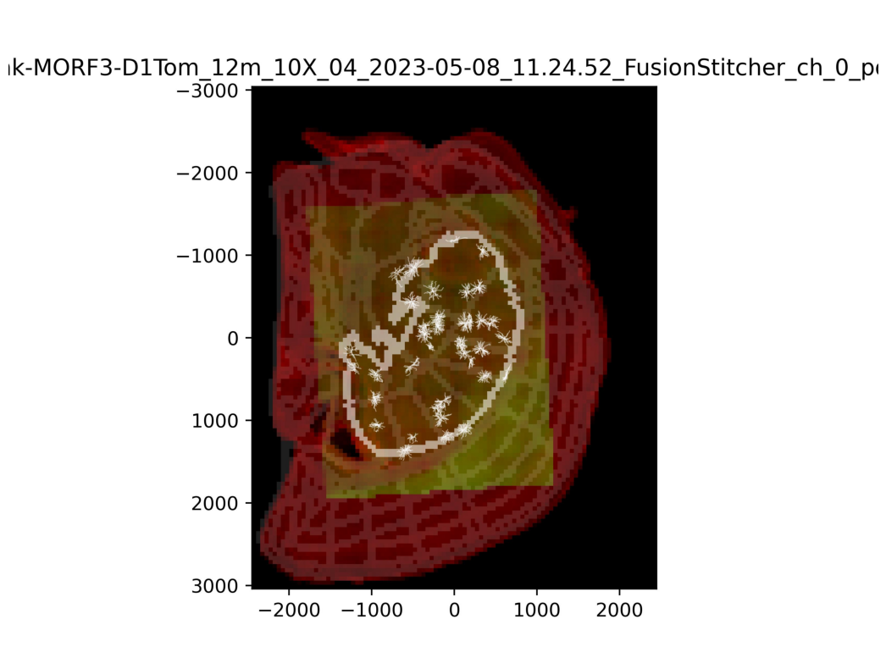

[1]:
import sys
import matplotlib.pyplot as plt
sys.path.append('/home/abenneck/Desktop/image_reg/dragonfly_registration_summer_2023/registration_scripts/')
Step 1 Example¶
[2]:
# Example where
# !python3 step1_atlas_registration.py 'precomputed' 'hTME15-1'
brain = 'hTME15-1'
orientation = 'R'
target_files = ['/home/abenneck/panfs/dong/3D_registration/Yang_MORF_DragonFly/Q140_MORF_D1/Camk-MORF3-D1Tom_12m_hTME15-1_downsampled/10x/ch_0_pipeline_building/hTME15-1_Camk-MORF3-D1Tom_12m_10X_01_2023-05-08_10.12.46_FusionStitcher_ch_0_pow_[0.125]_down.npz', '/home/abenneck/panfs/dong/3D_registration/Yang_MORF_DragonFly/Q140_MORF_D1/Camk-MORF3-D1Tom_12m_hTME15-1_downsampled/10x/ch_0_pipeline_building/hTME15-1_Camk-MORF3-D1Tom_12m_10X_02_2023-05-08_10.31.20_FusionStitcher_ch_0_pow_[0.125]_down.npz', '/home/abenneck/panfs/dong/3D_registration/Yang_MORF_DragonFly/Q140_MORF_D1/Camk-MORF3-D1Tom_12m_hTME15-1_downsampled/10x/ch_0_pipeline_building/hTME15-1_Camk-MORF3-D1Tom_12m_10X_03_2023-05-08_10.48.01_FusionStitcher_ch_0_pow_[0.125]_down.npz', '/home/abenneck/panfs/dong/3D_registration/Yang_MORF_DragonFly/Q140_MORF_D1/Camk-MORF3-D1Tom_12m_hTME15-1_downsampled/10x/ch_0_pipeline_building/hTME15-1_Camk-MORF3-D1Tom_12m_10X_04_2023-05-08_11.24.52_FusionStitcher_ch_0_pow_[0.125]_down.npz', '/home/abenneck/panfs/dong/3D_registration/Yang_MORF_DragonFly/Q140_MORF_D1/Camk-MORF3-D1Tom_12m_hTME15-1_downsampled/10x/ch_0_pipeline_building/hTME15-1_Camk-MORF3-D1Tom_12m_10X_05_2023-05-08_11.43.25_FusionStitcher_ch_0_pow_[0.125]_down.npz', '/home/abenneck/panfs/dong/3D_registration/Yang_MORF_DragonFly/Q140_MORF_D1/Camk-MORF3-D1Tom_12m_hTME15-1_downsampled/10x/ch_0_pipeline_building/hTME15-1_Camk-MORF3-D1Tom_12m_10X_06_2023-05-08_11.57.43_FusionStitcher_ch_0_pow_[0.125]_down.npz', '/home/abenneck/panfs/dong/3D_registration/Yang_MORF_DragonFly/Q140_MORF_D1/Camk-MORF3-D1Tom_12m_hTME15-1_downsampled/10x/ch_0_pipeline_building/hTME15-1_Camk-MORF3-D1Tom_12m_10X_07_2023-05-08_12.19.31_FusionStitcher_ch_0_pow_[0.125]_down.npz', '/home/abenneck/panfs/dong/3D_registration/Yang_MORF_DragonFly/Q140_MORF_D1/Camk-MORF3-D1Tom_12m_hTME15-1_downsampled/10x/ch_0_pipeline_building/hTME15-1_Camk-MORF3-D1Tom_12m_10X_08_2023-05-08_12.35.58_FusionStitcher_ch_0_pow_[0.125]_down.npz', '/home/abenneck/panfs/dong/3D_registration/Yang_MORF_DragonFly/Q140_MORF_D1/Camk-MORF3-D1Tom_12m_hTME15-1_downsampled/10x/ch_0_pipeline_building/hTME15-1_Camk-MORF3-D1Tom_12m_10X_09_2023-05-08_12.55.16_FusionStitcher_ch_0_pow_[0.125]_down.npz']
outdir = '/home/abenneck/dragonfly_work/dragonfly_outputs_script/hTME15-1/dragonfly_output_vis'
atlas_names = ['/home/abenneck/mounts/bmaproot/nafs/dtward/allen_vtk/allen_vtk/ara_nissl_50.vtk', '/home/abenneck/mounts/bmaproot/nafs/dtward/allen_vtk/allen_vtk/average_template_50.vtk', '/home/abenneck/mounts/bmaproot/nafs/dtward/allen_vtk/allen_vtk/annotation_50.vtk']
to_flip = [0,1]
device = 'cuda:0'
A = "[[-1.0,0.0,0.0,1000.0], [0.0,0.0,-1.0,200.0],[0.0,1.0,0.0,-1800.0], [0.0,0.0,0.0,1.0]]"
d_path = '/home/abenneck/Desktop/donglab_workflows'
e_path = '/home/abenneck/Desktop/emlddmm'
# Example where all the input arguments are provided
# !python3 step1_atlas_registration.py 'hTME15-1' 'R' -low '/home/abenneck/panfs/dong/3D_registration/Yang_MORF_DragonFly/Q140_MORF_D1/Camk-MORF3-D1Tom_12m_hTME15-1_downsampled/10x/ch_0_pipeline_building/hTME15-1_Camk-MORF3-D1Tom_12m_10X_01_2023-05-08_10.12.46_FusionStitcher_ch_0_pow_[0.125]_down.npz' '/home/abenneck/panfs/dong/3D_registration/Yang_MORF_DragonFly/Q140_MORF_D1/Camk-MORF3-D1Tom_12m_hTME15-1_downsampled/10x/ch_0_pipeline_building/hTME15-1_Camk-MORF3-D1Tom_12m_10X_02_2023-05-08_10.31.20_FusionStitcher_ch_0_pow_[0.125]_down.npz' '/home/abenneck/panfs/dong/3D_registration/Yang_MORF_DragonFly/Q140_MORF_D1/Camk-MORF3-D1Tom_12m_hTME15-1_downsampled/10x/ch_0_pipeline_building/hTME15-1_Camk-MORF3-D1Tom_12m_10X_03_2023-05-08_10.48.01_FusionStitcher_ch_0_pow_[0.125]_down.npz' '/home/abenneck/panfs/dong/3D_registration/Yang_MORF_DragonFly/Q140_MORF_D1/Camk-MORF3-D1Tom_12m_hTME15-1_downsampled/10x/ch_0_pipeline_building/hTME15-1_Camk-MORF3-D1Tom_12m_10X_04_2023-05-08_11.24.52_FusionStitcher_ch_0_pow_[0.125]_down.npz' '/home/abenneck/panfs/dong/3D_registration/Yang_MORF_DragonFly/Q140_MORF_D1/Camk-MORF3-D1Tom_12m_hTME15-1_downsampled/10x/ch_0_pipeline_building/hTME15-1_Camk-MORF3-D1Tom_12m_10X_05_2023-05-08_11.43.25_FusionStitcher_ch_0_pow_[0.125]_down.npz' '/home/abenneck/panfs/dong/3D_registration/Yang_MORF_DragonFly/Q140_MORF_D1/Camk-MORF3-D1Tom_12m_hTME15-1_downsampled/10x/ch_0_pipeline_building/hTME15-1_Camk-MORF3-D1Tom_12m_10X_06_2023-05-08_11.57.43_FusionStitcher_ch_0_pow_[0.125]_down.npz' '/home/abenneck/panfs/dong/3D_registration/Yang_MORF_DragonFly/Q140_MORF_D1/Camk-MORF3-D1Tom_12m_hTME15-1_downsampled/10x/ch_0_pipeline_building/hTME15-1_Camk-MORF3-D1Tom_12m_10X_07_2023-05-08_12.19.31_FusionStitcher_ch_0_pow_[0.125]_down.npz' '/home/abenneck/panfs/dong/3D_registration/Yang_MORF_DragonFly/Q140_MORF_D1/Camk-MORF3-D1Tom_12m_hTME15-1_downsampled/10x/ch_0_pipeline_building/hTME15-1_Camk-MORF3-D1Tom_12m_10X_08_2023-05-08_12.35.58_FusionStitcher_ch_0_pow_[0.125]_down.npz' '/home/abenneck/panfs/dong/3D_registration/Yang_MORF_DragonFly/Q140_MORF_D1/Camk-MORF3-D1Tom_12m_hTME15-1_downsampled/10x/ch_0_pipeline_building/hTME15-1_Camk-MORF3-D1Tom_12m_10X_09_2023-05-08_12.55.16_FusionStitcher_ch_0_pow_[0.125]_down.npz' -out '/home/abenneck/dragonfly_work/dragonfly_outputs_script/hTME15-1/dragonfly_output_vis' -atlas_paths '/home/abenneck/mounts/bmaproot/nafs/dtward/allen_vtk/allen_vtk/ara_nissl_50.vtk' '/home/abenneck/mounts/bmaproot/nafs/dtward/allen_vtk/allen_vtk/average_template_50.vtk' '/home/abenneck/mounts/bmaproot/nafs/dtward/allen_vtk/allen_vtk/annotation_50.vtk' -to_flip 0 1 -device 'cuda:0' -d_path '/home/abenneck/Desktop/donglab_workflows' -e_path '/home/abenneck/Desktop/emlddmm' --A "[[-1.0,0.0,0.0,1000.0], [0.0,0.0,-1.0,200.0],[0.0,1.0,0.0,-1800.0], [0.0,0.0,0.0,1.0]]"
# Example where all the input arguments are provided, aside from 'A' + only one slice is passed for registration
# !python3 step1_atlas_registration.py 'hTME15-1' 'R' -low '/home/abenneck/panfs/dong/3D_registration/Yang_MORF_DragonFly/Q140_MORF_D1/Camk-MORF3-D1Tom_12m_hTME15-1_downsampled/10x/ch_0_pipeline_building/hTME15-1_Camk-MORF3-D1Tom_12m_10X_09_2023-05-08_12.55.16_FusionStitcher_ch_0_pow_[0.125]_down.npz' -out '/home/abenneck/dragonfly_work/dragonfly_outputs_script/hTME15-1/dragonfly_output_vis' -atlas_paths '/home/abenneck/mounts/bmaproot/nafs/dtward/allen_vtk/allen_vtk/ara_nissl_50.vtk' '/home/abenneck/mounts/bmaproot/nafs/dtward/allen_vtk/allen_vtk/average_template_50.vtk' '/home/abenneck/mounts/bmaproot/nafs/dtward/allen_vtk/allen_vtk/annotation_50.vtk' -to_flip 0 1 -device 'cuda:0' -d_path '/home/abenneck/Desktop/donglab_workflows' -e_path '/home/abenneck/Desktop/emlddmm'
Step 1 Outputs¶
[3]:
fig, ax = plt.subplots(2,2, figsize=(16,16))
fname_recon0 = '/home/abenneck/dragonfly_work/dragonfly_outputs_weighted/TME08-1/dragonfly_output_vis/recon_it_00000.jpg'
recon0 = plt.imread(fname_recon0)
ax[0,0].set_axis_off()
ax[0,0].set_title('Before registration',fontsize=20)
ax[0,0].imshow(recon0)
fname_rgb0 = '/home/abenneck/dragonfly_work/dragonfly_outputs_weighted/TME08-1/dragonfly_output_vis/rgb_it_00000.jpg'
rgb0 = plt.imread(fname_rgb0)
ax[1,0].set_axis_off()
ax[1,0].imshow(rgb0)
fname_reconn1 = '/home/abenneck/dragonfly_work/dragonfly_outputs_weighted/TME08-1/dragonfly_output_vis/recon_it_39761.jpg'
reconn1 = plt.imread(fname_reconn1)
ax[0,1].set_axis_off()
ax[0,1].set_title('After registration',fontsize=20)
ax[0,1].imshow(reconn1)
fname_rgbn1 = '/home/abenneck/dragonfly_work/dragonfly_outputs_weighted/TME08-1/dragonfly_output_vis/rgb_it_39761.jpg'
rgbn1 = plt.imread(fname_rgbn1)
ax[1,1].set_axis_off()
ax[1,1].imshow(rgbn1)
fig.set_tight_layout(True)

Step 2 Example¶
[4]:
high_path = '/home/abenneck/panfs/dong/3D_registration/Yang_MORF_DragonFly/TME08-1_downsampled/30x/ch_0_pipeline_building/Camk2a-MORF3-D1Tom_TME08-1_30x_Str_04A_ch_0_pow_[0.125]_down.npz'
low_path = '/home/abenneck/panfs/dong/3D_registration/Yang_MORF_DragonFly/TME08-1_downsampled/10x/ch_1_pipeline_building/Camk2a-MORF3-D1Tom_TME08-1_10x_04_ch_1_pow_[0.125]_down.npz'
outdir = '/home/abenneck/dragonfly_work/dragonfly_outputs_script/TME08-1/step2_out'
shifts = [0,800,2900]
d_path = '/home/abenneck/Desktop/donglab_workflows'
e_path = '/home/abenneck/Desktop/emlddmm'
# Example where all input arguments are provided
# !python3 step2_atlas_registration.py 'TME08-1' '-low_path=/home/abenneck/panfs/dong/3D_registration/Yang_MORF_DragonFly/TME08-1_downsampled/10x/ch_1_pipeline_building/Camk2a-MORF3-D1Tom_TME08-1_10x_04_ch_1_pow_[0.125]_down.npz' '-high_path=/home/abenneck/panfs/dong/3D_registration/Yang_MORF_DragonFly/TME08-1_downsampled/30x/ch_0_pipeline_building/Camk2a-MORF3-D1Tom_TME08-1_30x_Str_04A_ch_0_pow_[0.125]_down.npz' '-outdir=/home/abenneck/dragonfly_work/dragonfly_outputs_script/TME08-1/step2_out' '-high_num=04A' '-d_path=/home/abenneck/Desktop/donglab_workflows' '-e_path=/home/abenneck/Desktop/emlddmm' -shifts 0 800 2900
Step 2 Outputs¶
[5]:
fig, ax = plt.subplots(1,2,figsize=(18,9))
fnameb = '/home/abenneck/dragonfly_work/dragonfly_outputs/TME08-1/dragonfly_10_to_30_outputs/04A_err3_before.jpg'
imgb = plt.imread(fnameb)
ax[0].set_axis_off()
ax[0].imshow(imgb)
fnamea = '/home/abenneck/dragonfly_work/dragonfly_outputs/TME08-1/dragonfly_10_to_30_outputs/04A_err3_after.jpg'
imga = plt.imread(fnamea)
ax[1].set_axis_off()
ax[1].imshow(imga)
fig.set_tight_layout(True)

Step 3 Example¶
Whole brain example (TME08-1)¶
[6]:
# Define all input variables
dataset = 'TME08-1'
orientation = 'W'
neuron_dir = '/home/abenneck/mounts/bmaproot/panfs/dong/3D_registration/Yang_MORF_DragonFly/TME08-1_reconstructions'
low_to_high_dir = '/home/abenneck/mounts/bmaproot/nafs/dtward/andrew_work/test/dragonfly_work/dragonfly_outputs/TME08-1/dragonfly_10_to_30_outputs'
tform = '/home/abenneck/mounts/bmaproot/nafs/dtward/andrew_work/test/dragonfly_work/dragonfly_outputs_weighted/TME08-1/dragonfly_output_vis/transformation_outputs.npz'
low_img_paths = ['/home/abenneck/mounts/bmaproot/panfs/dong/3D_registration/Yang_MORF_DragonFly/TME08-1_downsampled/10x/ch_0_pipeline_building/Camk2a-MORF3-D1Tom_TME08-1_10x_01_ch_0_pow_[0.125]_down.npz',
'/home/abenneck/mounts/bmaproot/panfs/dong/3D_registration/Yang_MORF_DragonFly/TME08-1_downsampled/10x/ch_0_pipeline_building/Camk2a-MORF3-D1Tom_TME08-1_10x_02_ch_0_pow_[0.125]_down.npz',
'/home/abenneck/mounts/bmaproot/panfs/dong/3D_registration/Yang_MORF_DragonFly/TME08-1_downsampled/10x/ch_0_pipeline_building/Camk2a-MORF3-D1Tom_TME08-1_10x_03_ch_0_pow_[0.125]_down.npz',
'/home/abenneck/mounts/bmaproot/panfs/dong/3D_registration/Yang_MORF_DragonFly/TME08-1_downsampled/10x/ch_0_pipeline_building/Camk2a-MORF3-D1Tom_TME08-1_10x_04_ch_0_pow_[0.125]_down.npz',
'/home/abenneck/mounts/bmaproot/panfs/dong/3D_registration/Yang_MORF_DragonFly/TME08-1_downsampled/10x/ch_0_pipeline_building/Camk2a-MORF3-D1Tom_TME08-1_10x_05_ch_0_pow_[0.125]_down.npz',
'/home/abenneck/mounts/bmaproot/panfs/dong/3D_registration/Yang_MORF_DragonFly/TME08-1_downsampled/10x/ch_0_pipeline_building/Camk2a-MORF3-D1Tom_TME08-1_10x_06_ch_0_pow_[0.125]_down.npz',
'/home/abenneck/mounts/bmaproot/panfs/dong/3D_registration/Yang_MORF_DragonFly/TME08-1_downsampled/10x/ch_0_pipeline_building/Camk2a-MORF3-D1Tom_TME08-1_10x_07_ch_0_pow_[0.125]_down.npz',
'/home/abenneck/mounts/bmaproot/panfs/dong/3D_registration/Yang_MORF_DragonFly/TME08-1_downsampled/10x/ch_0_pipeline_building/Camk2a-MORF3-D1Tom_TME08-1_10x_08_ch_0_pow_[0.125]_down.npz'
]
low_imd_ids = ['01','02','03','04','05','06','07','08']
high_img_paths = ['/home/abenneck/mounts/bmaproot/panfs/dong/3D_registration/Yang_MORF_DragonFly/TME08-1_downsampled/30x/ch_0_pipeline_building/Camk2a-MORF3-D1Tom_TME08-1_30x_Str_01A_ch_0_pow_[0.125]_down.npz',
'/home/abenneck/mounts/bmaproot/panfs/dong/3D_registration/Yang_MORF_DragonFly/TME08-1_downsampled/30x/ch_0_pipeline_building/Camk2a-MORF3-D1Tom_TME08-1_30x_Str_01B_ch_0_pow_[0.125]_down.npz',
'/home/abenneck/mounts/bmaproot/panfs/dong/3D_registration/Yang_MORF_DragonFly/TME08-1_downsampled/30x/ch_0_pipeline_building/Camk2a-MORF3-D1Tom_TME08-1_30x_Str_02A_ch_0_pow_[0.125]_down.npz',
'/home/abenneck/mounts/bmaproot/panfs/dong/3D_registration/Yang_MORF_DragonFly/TME08-1_downsampled/30x/ch_0_pipeline_building/Camk2a-MORF3-D1Tom_TME08-1_30x_Str_02B_ch_0_pow_[0.125]_down.npz',
'/home/abenneck/mounts/bmaproot/panfs/dong/3D_registration/Yang_MORF_DragonFly/TME08-1_downsampled/30x/ch_0_pipeline_building/Camk2a-MORF3-D1Tom_TME08-1_30x_Str_03A_ch_0_pow_[0.125]_down.npz',
'/home/abenneck/mounts/bmaproot/panfs/dong/3D_registration/Yang_MORF_DragonFly/TME08-1_downsampled/30x/ch_0_pipeline_building/Camk2a-MORF3-D1Tom_TME08-1_30x_Str_03B_ch_0_pow_[0.125]_down.npz',
'/home/abenneck/mounts/bmaproot/panfs/dong/3D_registration/Yang_MORF_DragonFly/TME08-1_downsampled/30x/ch_0_pipeline_building/Camk2a-MORF3-D1Tom_TME08-1_30x_Str_04A_ch_0_pow_[0.125]_down.npz',
'/home/abenneck/mounts/bmaproot/panfs/dong/3D_registration/Yang_MORF_DragonFly/TME08-1_downsampled/30x/ch_0_pipeline_building/Camk2a-MORF3-D1Tom_TME08-1_30x_Str_04B_ch_0_pow_[0.125]_down.npz',
'/home/abenneck/mounts/bmaproot/panfs/dong/3D_registration/Yang_MORF_DragonFly/TME08-1_downsampled/30x/ch_0_pipeline_building/Camk2a-MORF3-D1Tom_TME08-1_30x_Str_05A_ch_0_pow_[0.125]_down.npz',
'/home/abenneck/mounts/bmaproot/panfs/dong/3D_registration/Yang_MORF_DragonFly/TME08-1_downsampled/30x/ch_0_pipeline_building/Camk2a-MORF3-D1Tom_TME08-1_30x_Str_05B_ch_0_pow_[0.125]_down.npz',
'/home/abenneck/mounts/bmaproot/panfs/dong/3D_registration/Yang_MORF_DragonFly/TME08-1_downsampled/30x/ch_0_pipeline_building/Camk2a-MORF3-D1Tom_TME08-1_30x_Str_06A_ch_0_pow_[0.125]_down.npz',
'/home/abenneck/mounts/bmaproot/panfs/dong/3D_registration/Yang_MORF_DragonFly/TME08-1_downsampled/30x/ch_0_pipeline_building/Camk2a-MORF3-D1Tom_TME08-1_30x_Str_06B_ch_0_pow_[0.125]_down.npz',
'/home/abenneck/mounts/bmaproot/panfs/dong/3D_registration/Yang_MORF_DragonFly/TME08-1_downsampled/30x/ch_0_pipeline_building/Camk2a-MORF3-D1Tom_TME08-1_30x_Str_07A_ch_0_pow_[0.125]_down.npz',
'/home/abenneck/mounts/bmaproot/panfs/dong/3D_registration/Yang_MORF_DragonFly/TME08-1_downsampled/30x/ch_0_pipeline_building/Camk2a-MORF3-D1Tom_TME08-1_30x_Str_07B_ch_0_pow_[0.125]_down.npz',
'/home/abenneck/mounts/bmaproot/panfs/dong/3D_registration/Yang_MORF_DragonFly/TME08-1_downsampled/30x/ch_0_pipeline_building/Camk2a-MORF3-D1Tom_TME08-1_30x_Str_08A_ch_0_pow_[0.125]_down.npz',
'/home/abenneck/mounts/bmaproot/panfs/dong/3D_registration/Yang_MORF_DragonFly/TME08-1_downsampled/30x/ch_0_pipeline_building/Camk2a-MORF3-D1Tom_TME08-1_30x_Str_08B_ch_0_pow_[0.125]_down.npz'
]
high_img_ids = "[['01A','01B'],['02A','02B'],['03A','03B'],['04A','04B'],['05A','05B'],['06A','06B'],['07A','07B'],['08A','08B']]"
outdir = '/home/abenneck/dragonfly_work/dragonfly_outputs_script/TME08-1/step3_out'
atlas_paths = ['/home/abenneck/mounts/bmaproot/nafs/dtward/allen_vtk/allen_vtk/ara_nissl_50.vtk', '/home/abenneck/mounts/bmaproot/nafs/dtward/allen_vtk/allen_vtk/average_template_50.vtk','/home/abenneck/mounts/bmaproot/nafs/dtward/dong/upenn_atlas/UPenn_labels_reoriented_origin.vtk', '/home/abenneck/mounts/bmaproot/nafs/dtward/dong/upenn_atlas/atlas_info_KimRef_FPbasedLabel_v2.7.csv']
d_path = '/home/abenneck/Desktop/donglab_workflows'
e_path = '/home/abenneck/Desktop/emlddmm'
# Example where all input arguments are provided
# !python3 step3_atlas_registration.py 'TME08-1' 'W' '-neuron_dir=/home/abenneck/mounts/bmaproot/panfs/dong/3D_registration/Yang_MORF_DragonFly/TME08-1_reconstructions' '-low_to_high_dir=/home/abenneck/mounts/bmaproot/nafs/dtward/andrew_work/test/dragonfly_work/dragonfly_outputs/TME08-1/dragonfly_10_to_30_outputs' '-tform=/home/abenneck/mounts/bmaproot/nafs/dtward/andrew_work/test/dragonfly_work/dragonfly_outputs_weighted/TME08-1/dragonfly_output_vis/transformation_outputs.npz' -low_img_paths '/home/abenneck/mounts/bmaproot/panfs/dong/3D_registration/Yang_MORF_DragonFly/TME08-1_downsampled/10x/ch_0_pipeline_building/Camk2a-MORF3-D1Tom_TME08-1_10x_01_ch_0_pow_[0.125]_down.npz' '/home/abenneck/mounts/bmaproot/panfs/dong/3D_registration/Yang_MORF_DragonFly/TME08-1_downsampled/10x/ch_0_pipeline_building/Camk2a-MORF3-D1Tom_TME08-1_10x_02_ch_0_pow_[0.125]_down.npz' '/home/abenneck/mounts/bmaproot/panfs/dong/3D_registration/Yang_MORF_DragonFly/TME08-1_downsampled/10x/ch_0_pipeline_building/Camk2a-MORF3-D1Tom_TME08-1_10x_03_ch_0_pow_[0.125]_down.npz' '/home/abenneck/mounts/bmaproot/panfs/dong/3D_registration/Yang_MORF_DragonFly/TME08-1_downsampled/10x/ch_0_pipeline_building/Camk2a-MORF3-D1Tom_TME08-1_10x_04_ch_0_pow_[0.125]_down.npz' '/home/abenneck/mounts/bmaproot/panfs/dong/3D_registration/Yang_MORF_DragonFly/TME08-1_downsampled/10x/ch_0_pipeline_building/Camk2a-MORF3-D1Tom_TME08-1_10x_05_ch_0_pow_[0.125]_down.npz' '/home/abenneck/mounts/bmaproot/panfs/dong/3D_registration/Yang_MORF_DragonFly/TME08-1_downsampled/10x/ch_0_pipeline_building/Camk2a-MORF3-D1Tom_TME08-1_10x_06_ch_0_pow_[0.125]_down.npz' '/home/abenneck/mounts/bmaproot/panfs/dong/3D_registration/Yang_MORF_DragonFly/TME08-1_downsampled/10x/ch_0_pipeline_building/Camk2a-MORF3-D1Tom_TME08-1_10x_07_ch_0_pow_[0.125]_down.npz' '/home/abenneck/mounts/bmaproot/panfs/dong/3D_registration/Yang_MORF_DragonFly/TME08-1_downsampled/10x/ch_0_pipeline_building/Camk2a-MORF3-D1Tom_TME08-1_10x_08_ch_0_pow_[0.125]_down.npz' -low_img_ids '01' '02' '03' '04' '05' '06' '07' '08' -high_img_paths '/home/abenneck/mounts/bmaproot/panfs/dong/3D_registration/Yang_MORF_DragonFly/TME08-1_downsampled/30x/ch_0_pipeline_building/Camk2a-MORF3-D1Tom_TME08-1_30x_Str_01A_ch_0_pow_[0.125]_down.npz' '/home/abenneck/mounts/bmaproot/panfs/dong/3D_registration/Yang_MORF_DragonFly/TME08-1_downsampled/30x/ch_0_pipeline_building/Camk2a-MORF3-D1Tom_TME08-1_30x_Str_01B_ch_0_pow_[0.125]_down.npz' '/home/abenneck/mounts/bmaproot/panfs/dong/3D_registration/Yang_MORF_DragonFly/TME08-1_downsampled/30x/ch_0_pipeline_building/Camk2a-MORF3-D1Tom_TME08-1_30x_Str_02A_ch_0_pow_[0.125]_down.npz' '/home/abenneck/mounts/bmaproot/panfs/dong/3D_registration/Yang_MORF_DragonFly/TME08-1_downsampled/30x/ch_0_pipeline_building/Camk2a-MORF3-D1Tom_TME08-1_30x_Str_02B_ch_0_pow_[0.125]_down.npz' '/home/abenneck/mounts/bmaproot/panfs/dong/3D_registration/Yang_MORF_DragonFly/TME08-1_downsampled/30x/ch_0_pipeline_building/Camk2a-MORF3-D1Tom_TME08-1_30x_Str_03A_ch_0_pow_[0.125]_down.npz' '/home/abenneck/mounts/bmaproot/panfs/dong/3D_registration/Yang_MORF_DragonFly/TME08-1_downsampled/30x/ch_0_pipeline_building/Camk2a-MORF3-D1Tom_TME08-1_30x_Str_03B_ch_0_pow_[0.125]_down.npz' '/home/abenneck/mounts/bmaproot/panfs/dong/3D_registration/Yang_MORF_DragonFly/TME08-1_downsampled/30x/ch_0_pipeline_building/Camk2a-MORF3-D1Tom_TME08-1_30x_Str_04A_ch_0_pow_[0.125]_down.npz' '/home/abenneck/mounts/bmaproot/panfs/dong/3D_registration/Yang_MORF_DragonFly/TME08-1_downsampled/30x/ch_0_pipeline_building/Camk2a-MORF3-D1Tom_TME08-1_30x_Str_04B_ch_0_pow_[0.125]_down.npz' '/home/abenneck/mounts/bmaproot/panfs/dong/3D_registration/Yang_MORF_DragonFly/TME08-1_downsampled/30x/ch_0_pipeline_building/Camk2a-MORF3-D1Tom_TME08-1_30x_Str_05A_ch_0_pow_[0.125]_down.npz' '/home/abenneck/mounts/bmaproot/panfs/dong/3D_registration/Yang_MORF_DragonFly/TME08-1_downsampled/30x/ch_0_pipeline_building/Camk2a-MORF3-D1Tom_TME08-1_30x_Str_05B_ch_0_pow_[0.125]_down.npz' '/home/abenneck/mounts/bmaproot/panfs/dong/3D_registration/Yang_MORF_DragonFly/TME08-1_downsampled/30x/ch_0_pipeline_building/Camk2a-MORF3-D1Tom_TME08-1_30x_Str_06A_ch_0_pow_[0.125]_down.npz' '/home/abenneck/mounts/bmaproot/panfs/dong/3D_registration/Yang_MORF_DragonFly/TME08-1_downsampled/30x/ch_0_pipeline_building/Camk2a-MORF3-D1Tom_TME08-1_30x_Str_06B_ch_0_pow_[0.125]_down.npz' '/home/abenneck/mounts/bmaproot/panfs/dong/3D_registration/Yang_MORF_DragonFly/TME08-1_downsampled/30x/ch_0_pipeline_building/Camk2a-MORF3-D1Tom_TME08-1_30x_Str_07A_ch_0_pow_[0.125]_down.npz' '/home/abenneck/mounts/bmaproot/panfs/dong/3D_registration/Yang_MORF_DragonFly/TME08-1_downsampled/30x/ch_0_pipeline_building/Camk2a-MORF3-D1Tom_TME08-1_30x_Str_07B_ch_0_pow_[0.125]_down.npz' '/home/abenneck/mounts/bmaproot/panfs/dong/3D_registration/Yang_MORF_DragonFly/TME08-1_downsampled/30x/ch_0_pipeline_building/Camk2a-MORF3-D1Tom_TME08-1_30x_Str_08A_ch_0_pow_[0.125]_down.npz' '/home/abenneck/mounts/bmaproot/panfs/dong/3D_registration/Yang_MORF_DragonFly/TME08-1_downsampled/30x/ch_0_pipeline_building/Camk2a-MORF3-D1Tom_TME08-1_30x_Str_08B_ch_0_pow_[0.125]_down.npz' -high_img_ids '[[01A,01B],[02A,02B],[03A,03B],[04A,04B],[05A,05B],[06A,06B],[07A,07B],[08A,08B]]' -outdir '/home/abenneck/dragonfly_work/dragonfly_outputs_script/TME08-1/step3_out' -atlas_paths '/home/abenneck/mounts/bmaproot/nafs/dtward/allen_vtk/allen_vtk/ara_nissl_50.vtk' '/home/abenneck/mounts/bmaproot/nafs/dtward/allen_vtk/allen_vtk/average_template_50.vtk' '/home/abenneck/mounts/bmaproot/nafs/dtward/dong/upenn_atlas/UPenn_labels_reoriented_origin.vtk' '/home/abenneck/mounts/bmaproot/nafs/dtward/dong/upenn_atlas/atlas_info_KimRef_FPbasedLabel_v2.7.csv' -e_path '/home/abenneck/Desktop/emlddmm' -d_path '/home/abenneck/Desktop/donglab_workflows'
# Example where the high_img_ids argument is not provided, but rather generated within the script
# !python3 step3_atlas_registration.py 'TME08-1' 'W' '-neuron_dir=/home/abenneck/mounts/bmaproot/panfs/dong/3D_registration/Yang_MORF_DragonFly/TME08-1_reconstructions' '-low_to_high_dir=/home/abenneck/mounts/bmaproot/nafs/dtward/andrew_work/test/dragonfly_work/dragonfly_outputs/TME08-1/dragonfly_10_to_30_outputs' '-tform=/home/abenneck/mounts/bmaproot/nafs/dtward/andrew_work/test/dragonfly_work/dragonfly_outputs_weighted/TME08-1/dragonfly_output_vis/transformation_outputs.npz' -low_img_paths '/home/abenneck/mounts/bmaproot/panfs/dong/3D_registration/Yang_MORF_DragonFly/TME08-1_downsampled/10x/ch_0_pipeline_building/Camk2a-MORF3-D1Tom_TME08-1_10x_01_ch_0_pow_[0.125]_down.npz' '/home/abenneck/mounts/bmaproot/panfs/dong/3D_registration/Yang_MORF_DragonFly/TME08-1_downsampled/10x/ch_0_pipeline_building/Camk2a-MORF3-D1Tom_TME08-1_10x_02_ch_0_pow_[0.125]_down.npz' '/home/abenneck/mounts/bmaproot/panfs/dong/3D_registration/Yang_MORF_DragonFly/TME08-1_downsampled/10x/ch_0_pipeline_building/Camk2a-MORF3-D1Tom_TME08-1_10x_03_ch_0_pow_[0.125]_down.npz' '/home/abenneck/mounts/bmaproot/panfs/dong/3D_registration/Yang_MORF_DragonFly/TME08-1_downsampled/10x/ch_0_pipeline_building/Camk2a-MORF3-D1Tom_TME08-1_10x_04_ch_0_pow_[0.125]_down.npz' '/home/abenneck/mounts/bmaproot/panfs/dong/3D_registration/Yang_MORF_DragonFly/TME08-1_downsampled/10x/ch_0_pipeline_building/Camk2a-MORF3-D1Tom_TME08-1_10x_05_ch_0_pow_[0.125]_down.npz' '/home/abenneck/mounts/bmaproot/panfs/dong/3D_registration/Yang_MORF_DragonFly/TME08-1_downsampled/10x/ch_0_pipeline_building/Camk2a-MORF3-D1Tom_TME08-1_10x_06_ch_0_pow_[0.125]_down.npz' '/home/abenneck/mounts/bmaproot/panfs/dong/3D_registration/Yang_MORF_DragonFly/TME08-1_downsampled/10x/ch_0_pipeline_building/Camk2a-MORF3-D1Tom_TME08-1_10x_07_ch_0_pow_[0.125]_down.npz' '/home/abenneck/mounts/bmaproot/panfs/dong/3D_registration/Yang_MORF_DragonFly/TME08-1_downsampled/10x/ch_0_pipeline_building/Camk2a-MORF3-D1Tom_TME08-1_10x_08_ch_0_pow_[0.125]_down.npz' -low_img_ids '01' '02' '03' '04' '05' '06' '07' '08' -high_img_paths '/home/abenneck/mounts/bmaproot/panfs/dong/3D_registration/Yang_MORF_DragonFly/TME08-1_downsampled/30x/ch_0_pipeline_building/Camk2a-MORF3-D1Tom_TME08-1_30x_Str_01A_ch_0_pow_[0.125]_down.npz' '/home/abenneck/mounts/bmaproot/panfs/dong/3D_registration/Yang_MORF_DragonFly/TME08-1_downsampled/30x/ch_0_pipeline_building/Camk2a-MORF3-D1Tom_TME08-1_30x_Str_01B_ch_0_pow_[0.125]_down.npz' '/home/abenneck/mounts/bmaproot/panfs/dong/3D_registration/Yang_MORF_DragonFly/TME08-1_downsampled/30x/ch_0_pipeline_building/Camk2a-MORF3-D1Tom_TME08-1_30x_Str_02A_ch_0_pow_[0.125]_down.npz' '/home/abenneck/mounts/bmaproot/panfs/dong/3D_registration/Yang_MORF_DragonFly/TME08-1_downsampled/30x/ch_0_pipeline_building/Camk2a-MORF3-D1Tom_TME08-1_30x_Str_02B_ch_0_pow_[0.125]_down.npz' '/home/abenneck/mounts/bmaproot/panfs/dong/3D_registration/Yang_MORF_DragonFly/TME08-1_downsampled/30x/ch_0_pipeline_building/Camk2a-MORF3-D1Tom_TME08-1_30x_Str_03A_ch_0_pow_[0.125]_down.npz' '/home/abenneck/mounts/bmaproot/panfs/dong/3D_registration/Yang_MORF_DragonFly/TME08-1_downsampled/30x/ch_0_pipeline_building/Camk2a-MORF3-D1Tom_TME08-1_30x_Str_03B_ch_0_pow_[0.125]_down.npz' '/home/abenneck/mounts/bmaproot/panfs/dong/3D_registration/Yang_MORF_DragonFly/TME08-1_downsampled/30x/ch_0_pipeline_building/Camk2a-MORF3-D1Tom_TME08-1_30x_Str_04A_ch_0_pow_[0.125]_down.npz' '/home/abenneck/mounts/bmaproot/panfs/dong/3D_registration/Yang_MORF_DragonFly/TME08-1_downsampled/30x/ch_0_pipeline_building/Camk2a-MORF3-D1Tom_TME08-1_30x_Str_04B_ch_0_pow_[0.125]_down.npz' '/home/abenneck/mounts/bmaproot/panfs/dong/3D_registration/Yang_MORF_DragonFly/TME08-1_downsampled/30x/ch_0_pipeline_building/Camk2a-MORF3-D1Tom_TME08-1_30x_Str_05A_ch_0_pow_[0.125]_down.npz' '/home/abenneck/mounts/bmaproot/panfs/dong/3D_registration/Yang_MORF_DragonFly/TME08-1_downsampled/30x/ch_0_pipeline_building/Camk2a-MORF3-D1Tom_TME08-1_30x_Str_05B_ch_0_pow_[0.125]_down.npz' '/home/abenneck/mounts/bmaproot/panfs/dong/3D_registration/Yang_MORF_DragonFly/TME08-1_downsampled/30x/ch_0_pipeline_building/Camk2a-MORF3-D1Tom_TME08-1_30x_Str_06A_ch_0_pow_[0.125]_down.npz' '/home/abenneck/mounts/bmaproot/panfs/dong/3D_registration/Yang_MORF_DragonFly/TME08-1_downsampled/30x/ch_0_pipeline_building/Camk2a-MORF3-D1Tom_TME08-1_30x_Str_06B_ch_0_pow_[0.125]_down.npz' '/home/abenneck/mounts/bmaproot/panfs/dong/3D_registration/Yang_MORF_DragonFly/TME08-1_downsampled/30x/ch_0_pipeline_building/Camk2a-MORF3-D1Tom_TME08-1_30x_Str_07A_ch_0_pow_[0.125]_down.npz' '/home/abenneck/mounts/bmaproot/panfs/dong/3D_registration/Yang_MORF_DragonFly/TME08-1_downsampled/30x/ch_0_pipeline_building/Camk2a-MORF3-D1Tom_TME08-1_30x_Str_07B_ch_0_pow_[0.125]_down.npz' '/home/abenneck/mounts/bmaproot/panfs/dong/3D_registration/Yang_MORF_DragonFly/TME08-1_downsampled/30x/ch_0_pipeline_building/Camk2a-MORF3-D1Tom_TME08-1_30x_Str_08A_ch_0_pow_[0.125]_down.npz' '/home/abenneck/mounts/bmaproot/panfs/dong/3D_registration/Yang_MORF_DragonFly/TME08-1_downsampled/30x/ch_0_pipeline_building/Camk2a-MORF3-D1Tom_TME08-1_30x_Str_08B_ch_0_pow_[0.125]_down.npz' -outdir '/home/abenneck/dragonfly_work/dragonfly_outputs_script/TME08-1/step3_out' -atlas_paths '/home/abenneck/mounts/bmaproot/nafs/dtward/allen_vtk/allen_vtk/ara_nissl_50.vtk' '/home/abenneck/mounts/bmaproot/nafs/dtward/allen_vtk/allen_vtk/average_template_50.vtk' '/home/abenneck/mounts/bmaproot/nafs/dtward/dong/upenn_atlas/UPenn_labels_reoriented_origin.vtk' '/home/abenneck/mounts/bmaproot/nafs/dtward/dong/upenn_atlas/atlas_info_KimRef_FPbasedLabel_v2.7.csv' -e_path '/home/abenneck/Desktop/emlddmm' -d_path '/home/abenneck/Desktop/donglab_workflows'
Whole Brain Example Output¶
[7]:
fig,ax = plt.subplots(figsize=(20,10))
fname = '/home/abenneck/dragonfly_work/dragonfly_outputs_weighted/TME08-1/step3QC_highlight/TME08-1_04_seg.jpg'
img = plt.imread(fname)
ax.set_axis_off()
ax.imshow(img)
[7]:
<matplotlib.image.AxesImage at 0x7b08ebc8c820>

Hemisphere brain example (hTME15-1)¶
[8]:
# Define all input variables
dataset = 'hTME15-1'
orientation = 'R'
neuron_dir = '/home/abenneck/mounts/bmaproot/panfs/dong/3D_registration/Yang_MORF_DragonFly/Q140_MORF_D1/Camk-MORF3-D1Tom_12m_hTME15-1_reconstructions'
low_to_high_dir = '/home/abenneck/mounts/bmaproot/nafs/dtward/andrew_work/test/dragonfly_work/dragonfly_outputs/hTME15-1/dragonfly_10_to_30_outputs'
tform = '/home/abenneck/mounts/bmaproot/nafs/dtward/andrew_work/test/dragonfly_work/dragonfly_outputs_weighted/hTME15-1/dragonfly_output_vis/transformation_outputs.npz'
low_img_paths = ['/home/abenneck/mounts/bmaproot/panfs/dong/3D_registration/Yang_MORF_DragonFly/Q140_MORF_D1/Camk-MORF3-D1Tom_12m_hTME15-1_downsampled/10x/ch_0_pipeline_building/hTME15-1_Camk-MORF3-D1Tom_12m_10X_01_2023-05-08_10.12.46_FusionStitcher_ch_0_pow_[0.125]_down.npz',
'/home/abenneck/mounts/bmaproot/panfs/dong/3D_registration/Yang_MORF_DragonFly/Q140_MORF_D1/Camk-MORF3-D1Tom_12m_hTME15-1_downsampled/10x/ch_0_pipeline_building/hTME15-1_Camk-MORF3-D1Tom_12m_10X_02_2023-05-08_10.31.20_FusionStitcher_ch_0_pow_[0.125]_down.npz',
'/home/abenneck/mounts/bmaproot/panfs/dong/3D_registration/Yang_MORF_DragonFly/Q140_MORF_D1/Camk-MORF3-D1Tom_12m_hTME15-1_downsampled/10x/ch_0_pipeline_building/hTME15-1_Camk-MORF3-D1Tom_12m_10X_03_2023-05-08_10.48.01_FusionStitcher_ch_0_pow_[0.125]_down.npz',
'/home/abenneck/mounts/bmaproot/panfs/dong/3D_registration/Yang_MORF_DragonFly/Q140_MORF_D1/Camk-MORF3-D1Tom_12m_hTME15-1_downsampled/10x/ch_0_pipeline_building/hTME15-1_Camk-MORF3-D1Tom_12m_10X_04_2023-05-08_11.24.52_FusionStitcher_ch_0_pow_[0.125]_down.npz',
'/home/abenneck/mounts/bmaproot/panfs/dong/3D_registration/Yang_MORF_DragonFly/Q140_MORF_D1/Camk-MORF3-D1Tom_12m_hTME15-1_downsampled/10x/ch_0_pipeline_building/hTME15-1_Camk-MORF3-D1Tom_12m_10X_05_2023-05-08_11.43.25_FusionStitcher_ch_0_pow_[0.125]_down.npz',
'/home/abenneck/mounts/bmaproot/panfs/dong/3D_registration/Yang_MORF_DragonFly/Q140_MORF_D1/Camk-MORF3-D1Tom_12m_hTME15-1_downsampled/10x/ch_0_pipeline_building/hTME15-1_Camk-MORF3-D1Tom_12m_10X_06_2023-05-08_11.57.43_FusionStitcher_ch_0_pow_[0.125]_down.npz',
'/home/abenneck/mounts/bmaproot/panfs/dong/3D_registration/Yang_MORF_DragonFly/Q140_MORF_D1/Camk-MORF3-D1Tom_12m_hTME15-1_downsampled/10x/ch_0_pipeline_building/hTME15-1_Camk-MORF3-D1Tom_12m_10X_07_2023-05-08_12.19.31_FusionStitcher_ch_0_pow_[0.125]_down.npz',
'/home/abenneck/mounts/bmaproot/panfs/dong/3D_registration/Yang_MORF_DragonFly/Q140_MORF_D1/Camk-MORF3-D1Tom_12m_hTME15-1_downsampled/10x/ch_0_pipeline_building/hTME15-1_Camk-MORF3-D1Tom_12m_10X_08_2023-05-08_12.35.58_FusionStitcher_ch_0_pow_[0.125]_down.npz',
'/home/abenneck/mounts/bmaproot/panfs/dong/3D_registration/Yang_MORF_DragonFly/Q140_MORF_D1/Camk-MORF3-D1Tom_12m_hTME15-1_downsampled/10x/ch_0_pipeline_building/hTME15-1_Camk-MORF3-D1Tom_12m_10X_09_2023-05-08_12.55.16_FusionStitcher_ch_0_pow_[0.125]_down.npz'
]
low_img_ids = ['01','02','03','04','05','06','07','08','09']
high_img_paths = ['/home/abenneck/mounts/bmaproot/panfs/dong/3D_registration/Yang_MORF_DragonFly/Q140_MORF_D1/Camk-MORF3-D1Tom_12m_hTME15-1_downsampled/30x/ch_0_pipeline_building/hTME15-1_Camk-MORF3-D1Tom_12m_30X_Str_01_2023-05-12_11.34.43_FusionStitcher_ch_0_pow_[0.125]_down.npz',
'/home/abenneck/mounts/bmaproot/panfs/dong/3D_registration/Yang_MORF_DragonFly/Q140_MORF_D1/Camk-MORF3-D1Tom_12m_hTME15-1_downsampled/30x/ch_0_pipeline_building/hTME15-1_Camk-MORF3-D1Tom_12m_30X_Str_02_2023-05-12_13.50.00_FusionStitcher_ch_0_pow_[0.125]_down.npz',
'/home/abenneck/mounts/bmaproot/panfs/dong/3D_registration/Yang_MORF_DragonFly/Q140_MORF_D1/Camk-MORF3-D1Tom_12m_hTME15-1_downsampled/30x/ch_0_pipeline_building/hTME15-1_Camk-MORF3-D1Tom_12m_30X_Str_03_2023-05-12_16.29.54_FusionStitcher_ch_0_pow_[0.125]_down.npz',
'/home/abenneck/mounts/bmaproot/panfs/dong/3D_registration/Yang_MORF_DragonFly/Q140_MORF_D1/Camk-MORF3-D1Tom_12m_hTME15-1_downsampled/30x/ch_0_pipeline_building/hTME15-1_Camk-MORF3-D1Tom_12m_30X_Str_04_2023-05-15_09.51.46_FusionStitcher_ch_0_pow_[0.125]_down.npz',
'/home/abenneck/mounts/bmaproot/panfs/dong/3D_registration/Yang_MORF_DragonFly/Q140_MORF_D1/Camk-MORF3-D1Tom_12m_hTME15-1_downsampled/30x/ch_0_pipeline_building/hTME15-1_Camk-MORF3-D1Tom_12m_30X_Str_05_2023-05-15_11.59.03_FusionStitcher_ch_0_pow_[0.125]_down.npz',
'/home/abenneck/mounts/bmaproot/panfs/dong/3D_registration/Yang_MORF_DragonFly/Q140_MORF_D1/Camk-MORF3-D1Tom_12m_hTME15-1_downsampled/30x/ch_0_pipeline_building/hTME15-1_Camk-MORF3-D1Tom_12m_30X_Str_06_2023-05-15_13.24.24_FusionStitcher_ch_0_pow_[0.125]_down.npz',
'/home/abenneck/mounts/bmaproot/panfs/dong/3D_registration/Yang_MORF_DragonFly/Q140_MORF_D1/Camk-MORF3-D1Tom_12m_hTME15-1_downsampled/30x/ch_0_pipeline_building/hTME15-1_Camk-MORF3-D1Tom_12m_30X_Str_07_2023-05-15_14.35.58_FusionStitcher_ch_0_pow_[0.125]_down.npz',
'/home/abenneck/mounts/bmaproot/panfs/dong/3D_registration/Yang_MORF_DragonFly/Q140_MORF_D1/Camk-MORF3-D1Tom_12m_hTME15-1_downsampled/30x/ch_0_pipeline_building/hTME15-1_Camk-MORF3-D1Tom_12m_30X_Str_08_2023-05-15_17.25.31_FusionStitcher_ch_0_pow_[0.125]_down.npz'
]
high_img_ids = [['01'],['02'],['03'],['04'],['05'],['06'],['07'],['08']]
outdir = '/home/abenneck/dragonfly_work/dragonfly_outputs_script/hTME15-1/step3_out'
atlas_paths = ['/home/abenneck/mounts/bmaproot/nafs/dtward/allen_vtk/allen_vtk/ara_nissl_50.vtk', '/home/abenneck/mounts/bmaproot/nafs/dtward/allen_vtk/allen_vtk/average_template_50.vtk','/home/abenneck/mounts/bmaproot/nafs/dtward/dong/upenn_atlas/UPenn_labels_reoriented_origin.vtk', '/home/abenneck/mounts/bmaproot/nafs/dtward/dong/upenn_atlas/atlas_info_KimRef_FPbasedLabel_v2.7.csv']
d_path = '/home/abenneck/Desktop/donglab_workflows'
e_path = '/home/abenneck/Desktop/emlddmm'
# Example where all required input arguments are provided + -toggle_cp = True
# !python3 step3_atlas_registration.py 'hTME15-1' 'R' -neuron_dir '/home/abenneck/mounts/bmaproot/panfs/dong/3D_registration/Yang_MORF_DragonFly/Q140_MORF_D1/Camk-MORF3-D1Tom_12m_hTME15-1_reconstructions' -low_to_high_dir '/home/abenneck/mounts/bmaproot/nafs/dtward/andrew_work/test/dragonfly_work/dragonfly_outputs/hTME15-1/dragonfly_10_to_30_outputs' -tform '/home/abenneck/mounts/bmaproot/nafs/dtward/andrew_work/test/dragonfly_work/dragonfly_outputs_weighted/hTME15-1/dragonfly_output_vis/transformation_outputs.npz' -low_img_paths '/home/abenneck/mounts/bmaproot/panfs/dong/3D_registration/Yang_MORF_DragonFly/Q140_MORF_D1/Camk-MORF3-D1Tom_12m_hTME15-1_downsampled/10x/ch_0_pipeline_building/hTME15-1_Camk-MORF3-D1Tom_12m_10X_01_2023-05-08_10.12.46_FusionStitcher_ch_0_pow_[0.125]_down.npz' '/home/abenneck/mounts/bmaproot/panfs/dong/3D_registration/Yang_MORF_DragonFly/Q140_MORF_D1/Camk-MORF3-D1Tom_12m_hTME15-1_downsampled/10x/ch_0_pipeline_building/hTME15-1_Camk-MORF3-D1Tom_12m_10X_02_2023-05-08_10.31.20_FusionStitcher_ch_0_pow_[0.125]_down.npz' '/home/abenneck/mounts/bmaproot/panfs/dong/3D_registration/Yang_MORF_DragonFly/Q140_MORF_D1/Camk-MORF3-D1Tom_12m_hTME15-1_downsampled/10x/ch_0_pipeline_building/hTME15-1_Camk-MORF3-D1Tom_12m_10X_03_2023-05-08_10.48.01_FusionStitcher_ch_0_pow_[0.125]_down.npz' '/home/abenneck/mounts/bmaproot/panfs/dong/3D_registration/Yang_MORF_DragonFly/Q140_MORF_D1/Camk-MORF3-D1Tom_12m_hTME15-1_downsampled/10x/ch_0_pipeline_building/hTME15-1_Camk-MORF3-D1Tom_12m_10X_04_2023-05-08_11.24.52_FusionStitcher_ch_0_pow_[0.125]_down.npz' '/home/abenneck/mounts/bmaproot/panfs/dong/3D_registration/Yang_MORF_DragonFly/Q140_MORF_D1/Camk-MORF3-D1Tom_12m_hTME15-1_downsampled/10x/ch_0_pipeline_building/hTME15-1_Camk-MORF3-D1Tom_12m_10X_05_2023-05-08_11.43.25_FusionStitcher_ch_0_pow_[0.125]_down.npz' '/home/abenneck/mounts/bmaproot/panfs/dong/3D_registration/Yang_MORF_DragonFly/Q140_MORF_D1/Camk-MORF3-D1Tom_12m_hTME15-1_downsampled/10x/ch_0_pipeline_building/hTME15-1_Camk-MORF3-D1Tom_12m_10X_06_2023-05-08_11.57.43_FusionStitcher_ch_0_pow_[0.125]_down.npz' '/home/abenneck/mounts/bmaproot/panfs/dong/3D_registration/Yang_MORF_DragonFly/Q140_MORF_D1/Camk-MORF3-D1Tom_12m_hTME15-1_downsampled/10x/ch_0_pipeline_building/hTME15-1_Camk-MORF3-D1Tom_12m_10X_07_2023-05-08_12.19.31_FusionStitcher_ch_0_pow_[0.125]_down.npz' '/home/abenneck/mounts/bmaproot/panfs/dong/3D_registration/Yang_MORF_DragonFly/Q140_MORF_D1/Camk-MORF3-D1Tom_12m_hTME15-1_downsampled/10x/ch_0_pipeline_building/hTME15-1_Camk-MORF3-D1Tom_12m_10X_08_2023-05-08_12.35.58_FusionStitcher_ch_0_pow_[0.125]_down.npz' -low_img_ids '01' '02' '03' '04' '05' '06' '07' '08' -high_img_paths '/home/abenneck/mounts/bmaproot/panfs/dong/3D_registration/Yang_MORF_DragonFly/Q140_MORF_D1/Camk-MORF3-D1Tom_12m_hTME15-1_downsampled/30x/ch_0_pipeline_building/hTME15-1_Camk-MORF3-D1Tom_12m_30X_Str_01_2023-05-12_11.34.43_FusionStitcher_ch_0_pow_[0.125]_down.npz' '/home/abenneck/mounts/bmaproot/panfs/dong/3D_registration/Yang_MORF_DragonFly/Q140_MORF_D1/Camk-MORF3-D1Tom_12m_hTME15-1_downsampled/30x/ch_0_pipeline_building/hTME15-1_Camk-MORF3-D1Tom_12m_30X_Str_02_2023-05-12_13.50.00_FusionStitcher_ch_0_pow_[0.125]_down.npz' '/home/abenneck/mounts/bmaproot/panfs/dong/3D_registration/Yang_MORF_DragonFly/Q140_MORF_D1/Camk-MORF3-D1Tom_12m_hTME15-1_downsampled/30x/ch_0_pipeline_building/hTME15-1_Camk-MORF3-D1Tom_12m_30X_Str_03_2023-05-12_16.29.54_FusionStitcher_ch_0_pow_[0.125]_down.npz' '/home/abenneck/mounts/bmaproot/panfs/dong/3D_registration/Yang_MORF_DragonFly/Q140_MORF_D1/Camk-MORF3-D1Tom_12m_hTME15-1_downsampled/30x/ch_0_pipeline_building/hTME15-1_Camk-MORF3-D1Tom_12m_30X_Str_04_2023-05-15_09.51.46_FusionStitcher_ch_0_pow_[0.125]_down.npz' '/home/abenneck/mounts/bmaproot/panfs/dong/3D_registration/Yang_MORF_DragonFly/Q140_MORF_D1/Camk-MORF3-D1Tom_12m_hTME15-1_downsampled/30x/ch_0_pipeline_building/hTME15-1_Camk-MORF3-D1Tom_12m_30X_Str_05_2023-05-15_11.59.03_FusionStitcher_ch_0_pow_[0.125]_down.npz' '/home/abenneck/mounts/bmaproot/panfs/dong/3D_registration/Yang_MORF_DragonFly/Q140_MORF_D1/Camk-MORF3-D1Tom_12m_hTME15-1_downsampled/30x/ch_0_pipeline_building/hTME15-1_Camk-MORF3-D1Tom_12m_30X_Str_06_2023-05-15_13.24.24_FusionStitcher_ch_0_pow_[0.125]_down.npz' '/home/abenneck/mounts/bmaproot/panfs/dong/3D_registration/Yang_MORF_DragonFly/Q140_MORF_D1/Camk-MORF3-D1Tom_12m_hTME15-1_downsampled/30x/ch_0_pipeline_building/hTME15-1_Camk-MORF3-D1Tom_12m_30X_Str_07_2023-05-15_14.35.58_FusionStitcher_ch_0_pow_[0.125]_down.npz' '/home/abenneck/mounts/bmaproot/panfs/dong/3D_registration/Yang_MORF_DragonFly/Q140_MORF_D1/Camk-MORF3-D1Tom_12m_hTME15-1_downsampled/30x/ch_0_pipeline_building/hTME15-1_Camk-MORF3-D1Tom_12m_30X_Str_08_2023-05-15_17.25.31_FusionStitcher_ch_0_pow_[0.125]_down.npz' -high_img_ids '[[01],[02],[03],[04],[05],[06],[07],[08]]' -outdir '/home/abenneck/dragonfly_work/dragonfly_outputs_script/hTME15-1/step3_out' -atlas_paths '/home/abenneck/mounts/bmaproot/nafs/dtward/allen_vtk/allen_vtk/ara_nissl_50.vtk' '/home/abenneck/mounts/bmaproot/nafs/dtward/allen_vtk/allen_vtk/average_template_50.vtk' '/home/abenneck/mounts/bmaproot/nafs/dtward/dong/upenn_atlas/UPenn_labels_reoriented_origin.vtk' '/home/abenneck/mounts/bmaproot/nafs/dtward/dong/upenn_atlas/atlas_info_KimRef_FPbasedLabel_v2.7.csv' -toggle_cp True -d_path '/home/abenneck/Desktop/donglab_workflows' -e_path '/home/abenneck/Desktop/emlddmm'
# Example where the high_img_ids argument is not provided, but rather generated within the script
# !python3 step3_atlas_registration.py 'hTME15-1' 'R' -neuron_dir '/home/abenneck/mounts/bmaproot/panfs/dong/3D_registration/Yang_MORF_DragonFly/Q140_MORF_D1/Camk-MORF3-D1Tom_12m_hTME15-1_reconstructions' -low_to_high_dir '/home/abenneck/mounts/bmaproot/nafs/dtward/andrew_work/test/dragonfly_work/dragonfly_outputs/hTME15-1/dragonfly_10_to_30_outputs' -tform '/home/abenneck/mounts/bmaproot/nafs/dtward/andrew_work/test/dragonfly_work/dragonfly_outputs_weighted/hTME15-1/dragonfly_output_vis/transformation_outputs.npz' -low_img_paths '/home/abenneck/mounts/bmaproot/panfs/dong/3D_registration/Yang_MORF_DragonFly/Q140_MORF_D1/Camk-MORF3-D1Tom_12m_hTME15-1_downsampled/10x/ch_0_pipeline_building/hTME15-1_Camk-MORF3-D1Tom_12m_10X_01_2023-05-08_10.12.46_FusionStitcher_ch_0_pow_[0.125]_down.npz' '/home/abenneck/mounts/bmaproot/panfs/dong/3D_registration/Yang_MORF_DragonFly/Q140_MORF_D1/Camk-MORF3-D1Tom_12m_hTME15-1_downsampled/10x/ch_0_pipeline_building/hTME15-1_Camk-MORF3-D1Tom_12m_10X_02_2023-05-08_10.31.20_FusionStitcher_ch_0_pow_[0.125]_down.npz' '/home/abenneck/mounts/bmaproot/panfs/dong/3D_registration/Yang_MORF_DragonFly/Q140_MORF_D1/Camk-MORF3-D1Tom_12m_hTME15-1_downsampled/10x/ch_0_pipeline_building/hTME15-1_Camk-MORF3-D1Tom_12m_10X_03_2023-05-08_10.48.01_FusionStitcher_ch_0_pow_[0.125]_down.npz' '/home/abenneck/mounts/bmaproot/panfs/dong/3D_registration/Yang_MORF_DragonFly/Q140_MORF_D1/Camk-MORF3-D1Tom_12m_hTME15-1_downsampled/10x/ch_0_pipeline_building/hTME15-1_Camk-MORF3-D1Tom_12m_10X_04_2023-05-08_11.24.52_FusionStitcher_ch_0_pow_[0.125]_down.npz' '/home/abenneck/mounts/bmaproot/panfs/dong/3D_registration/Yang_MORF_DragonFly/Q140_MORF_D1/Camk-MORF3-D1Tom_12m_hTME15-1_downsampled/10x/ch_0_pipeline_building/hTME15-1_Camk-MORF3-D1Tom_12m_10X_05_2023-05-08_11.43.25_FusionStitcher_ch_0_pow_[0.125]_down.npz' '/home/abenneck/mounts/bmaproot/panfs/dong/3D_registration/Yang_MORF_DragonFly/Q140_MORF_D1/Camk-MORF3-D1Tom_12m_hTME15-1_downsampled/10x/ch_0_pipeline_building/hTME15-1_Camk-MORF3-D1Tom_12m_10X_06_2023-05-08_11.57.43_FusionStitcher_ch_0_pow_[0.125]_down.npz' '/home/abenneck/mounts/bmaproot/panfs/dong/3D_registration/Yang_MORF_DragonFly/Q140_MORF_D1/Camk-MORF3-D1Tom_12m_hTME15-1_downsampled/10x/ch_0_pipeline_building/hTME15-1_Camk-MORF3-D1Tom_12m_10X_07_2023-05-08_12.19.31_FusionStitcher_ch_0_pow_[0.125]_down.npz' '/home/abenneck/mounts/bmaproot/panfs/dong/3D_registration/Yang_MORF_DragonFly/Q140_MORF_D1/Camk-MORF3-D1Tom_12m_hTME15-1_downsampled/10x/ch_0_pipeline_building/hTME15-1_Camk-MORF3-D1Tom_12m_10X_08_2023-05-08_12.35.58_FusionStitcher_ch_0_pow_[0.125]_down.npz' -low_img_ids '01' '02' '03' '04' '05' '06' '07' '08' -high_img_paths '/home/abenneck/mounts/bmaproot/panfs/dong/3D_registration/Yang_MORF_DragonFly/Q140_MORF_D1/Camk-MORF3-D1Tom_12m_hTME15-1_downsampled/30x/ch_0_pipeline_building/hTME15-1_Camk-MORF3-D1Tom_12m_30X_Str_01_2023-05-12_11.34.43_FusionStitcher_ch_0_pow_[0.125]_down.npz' '/home/abenneck/mounts/bmaproot/panfs/dong/3D_registration/Yang_MORF_DragonFly/Q140_MORF_D1/Camk-MORF3-D1Tom_12m_hTME15-1_downsampled/30x/ch_0_pipeline_building/hTME15-1_Camk-MORF3-D1Tom_12m_30X_Str_02_2023-05-12_13.50.00_FusionStitcher_ch_0_pow_[0.125]_down.npz' '/home/abenneck/mounts/bmaproot/panfs/dong/3D_registration/Yang_MORF_DragonFly/Q140_MORF_D1/Camk-MORF3-D1Tom_12m_hTME15-1_downsampled/30x/ch_0_pipeline_building/hTME15-1_Camk-MORF3-D1Tom_12m_30X_Str_03_2023-05-12_16.29.54_FusionStitcher_ch_0_pow_[0.125]_down.npz' '/home/abenneck/mounts/bmaproot/panfs/dong/3D_registration/Yang_MORF_DragonFly/Q140_MORF_D1/Camk-MORF3-D1Tom_12m_hTME15-1_downsampled/30x/ch_0_pipeline_building/hTME15-1_Camk-MORF3-D1Tom_12m_30X_Str_04_2023-05-15_09.51.46_FusionStitcher_ch_0_pow_[0.125]_down.npz' '/home/abenneck/mounts/bmaproot/panfs/dong/3D_registration/Yang_MORF_DragonFly/Q140_MORF_D1/Camk-MORF3-D1Tom_12m_hTME15-1_downsampled/30x/ch_0_pipeline_building/hTME15-1_Camk-MORF3-D1Tom_12m_30X_Str_05_2023-05-15_11.59.03_FusionStitcher_ch_0_pow_[0.125]_down.npz' '/home/abenneck/mounts/bmaproot/panfs/dong/3D_registration/Yang_MORF_DragonFly/Q140_MORF_D1/Camk-MORF3-D1Tom_12m_hTME15-1_downsampled/30x/ch_0_pipeline_building/hTME15-1_Camk-MORF3-D1Tom_12m_30X_Str_06_2023-05-15_13.24.24_FusionStitcher_ch_0_pow_[0.125]_down.npz' '/home/abenneck/mounts/bmaproot/panfs/dong/3D_registration/Yang_MORF_DragonFly/Q140_MORF_D1/Camk-MORF3-D1Tom_12m_hTME15-1_downsampled/30x/ch_0_pipeline_building/hTME15-1_Camk-MORF3-D1Tom_12m_30X_Str_07_2023-05-15_14.35.58_FusionStitcher_ch_0_pow_[0.125]_down.npz' '/home/abenneck/mounts/bmaproot/panfs/dong/3D_registration/Yang_MORF_DragonFly/Q140_MORF_D1/Camk-MORF3-D1Tom_12m_hTME15-1_downsampled/30x/ch_0_pipeline_building/hTME15-1_Camk-MORF3-D1Tom_12m_30X_Str_08_2023-05-15_17.25.31_FusionStitcher_ch_0_pow_[0.125]_down.npz' -outdir '/home/abenneck/dragonfly_work/dragonfly_outputs_script/hTME15-1/step3_out' -atlas_paths '/home/abenneck/mounts/bmaproot/nafs/dtward/allen_vtk/allen_vtk/ara_nissl_50.vtk' '/home/abenneck/mounts/bmaproot/nafs/dtward/allen_vtk/allen_vtk/average_template_50.vtk' '/home/abenneck/mounts/bmaproot/nafs/dtward/dong/upenn_atlas/UPenn_labels_reoriented_origin.vtk' '/home/abenneck/mounts/bmaproot/nafs/dtward/dong/upenn_atlas/atlas_info_KimRef_FPbasedLabel_v2.7.csv' -d_path '/home/abenneck/Desktop/donglab_workflows' -e_path '/home/abenneck/Desktop/emlddmm'
Hemisphere Brain Example Output¶
[9]:
fig,ax = plt.subplots(figsize=(20,10))
fname = '/home/abenneck/dragonfly_work/dragonfly_outputs_weighted/hTME15-1/step3QC/hTME15-1_04_seg.jpg'
img = plt.imread(fname)
ax.set_axis_off()
ax.imshow(img)
[9]:
<matplotlib.image.AxesImage at 0x7b08e88b4d60>
